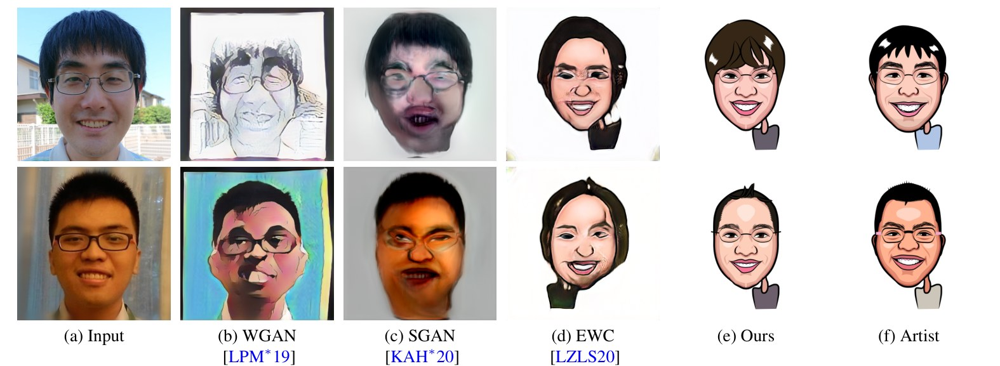
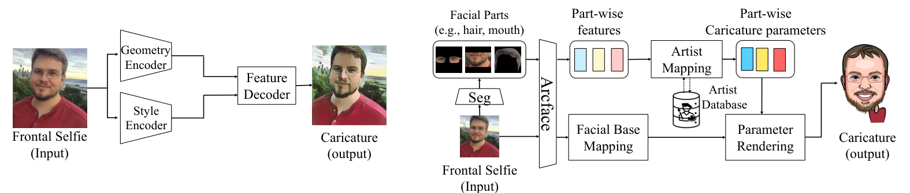

Automatic Vector Caricature via Face Parametrization
Pacific Graphics 2023, Short Papers and Posters, pp. 57–64, The Eurographics Association · doi:10.2312/pg.20231271
Supplementary video (PG 2023 conference track): watch on YouTube.

Abstract
Automatic caricature generation is a challenging task that aims to emphasize the subject's facial characteristics while preserving its identity. Due to the complexity of the task, caricatures could exclusively be performed by a trained artist. Recent developments in deep learning have achieved promising results in capturing artistic styles. Despite the success, current methods still struggle to accurately capture the whimsical aspect of caricatures while preserving identity. In this work, we propose Parametric Caricature, the first parametric-based caricature generation that yields vectorized and animatable caricatures. We devise several hundred parameters to encode facial traits, which our method directly predicts instead of estimating the raster caricature like previous methods. To guide the attention of the method, we segment the different parts of the face and retrieve the most similar parts from an artist-made database of caricatures. Our method proposes visually appealing caricatures more adapted to use as avatars than existing methods, as demonstrated by our user study.
How it works

- Parametric caricature representation. An artist designed 629 parameters covering geometry (stroke positions, angles, volumes), optional parts (eyeglasses, beard, hair) and colours. Strokes are rendered with κ-curves, and every parameter has a neutral default, so the output is a clean vector drawing that is easy to edit and animate.
- Dataset. Frontal portraits of 245 consenting people, each caricatured by one experienced artist with the parametric system (200 training / 45 test subjects). Ten artist-written augmentation scripts extend it tenfold.
- Facial characteristics extraction. 3DDFA geometry cues and ArcFace features feed an MLP that regresses 337 parameters (223 geometry, 114 texture). Keypoint and edit masks focus the loss on the parameters the artist actually edited.
- Artist mapping. Hair, eyeglasses and facial hair are segmented and embedded with ArcFace + an MLP trained with a Gram-matrix caricature-similarity loss. The closest part in the artist database is then retrieved by cosine similarity.
User study
38 participants compared pairs of caricature avatars generated from real photos (A/B test). The table gives how often our result was preferred over each method.
| Compared method | Category | Ours preferred |
|---|---|---|
| WarpGAN | caricature generation | 68.62 % |
| CartoonGAN | caricature generation | 54.61 % |
| AutoToon | caricature generation | 63.91 % |
| CycleGAN | image-to-image translation | 79.55 % |
| MUNIT | image-to-image translation | 83.64 % |
| StyleGAN2-ADA (SGAN) | few-shot generation | 96.76 % |
| Few-shot adaptation (FSA) | few-shot generation | 94.13 % |
| EWC | few-shot generation | 93.92 % |
| Artist | reference | 11.94 % |
Values from Table 1 of the paper. The method is preferred over every automatic baseline; the artist's own caricatures remain better, which leaves room for future work.
Citation
@inproceedings{10.2312:pg.20231271,
booktitle = {Pacific Graphics Short Papers and Posters},
editor = {Chaine, Raphaëlle and Deng, Zhigang and Kim, Min H.},
title = {{Automatic Vector Caricature via Face Parametrization}},
author = {Madono, Koki and Hold-Geoffroy, Yannick and Li, Yijun and Ito, Daichi and Echevarria, Jose and Smith, Cameron},
year = {2023},
publisher = {The Eurographics Association},
ISBN = {978-3-03868-234-9},
DOI = {10.2312/pg.20231271}
}
The paper is open access under the Creative Commons Attribution 4.0 International licence (© 2023 The Authors; proceedings published by the Eurographics Association). The figures above are reproduced from it.
← Back to the publication list